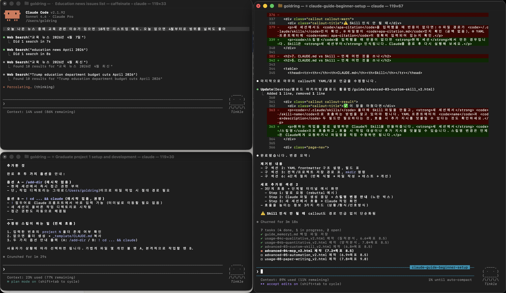

Worktree 병렬 작업
고급 02 같은 저장소를 두 폴더에서 동시에 작업 — 메인 논문과 실험적 초안을 분리
Git Worktree는 같은 프로젝트를 두 개의 독립된 작업 공간(폴더)에서 동시에 열 수 있는 기능입니다. 메인 논문을 건드리지 않고 실험적인 구조 변경을 시도하거나, A안과 B안을 나란히 써보고 싶을 때 유용합니다.
Worktree는 Git이 초기화된 저장소에서만 사용할 수 있습니다. 고급 01 Git 기초를 먼저 완료하세요.
1. 병렬 작업 방식 이해
Worktree를 본격적으로 다루기 전에, Claude를 병렬로 활용하는 세 가지 방식의 차이를 먼저 짚어봅니다.
- 대화창 1개 = 독립 세션
- 대화창 간 연결 없음
- 도구 없이 LLM이 직접 응답
- 항상 순차 처리
- Claude가 도구(파일 읽기·명령 실행 등)를 동시에 여러 개 호출 가능
- 사용자 대화 흐름은 순차
- 독립 하위 작업을 한 번에 지시하면 자동 병렬화
- 각 터미널이 독립된 Claude 프로세스
- 완전히 다른 작업을 진짜 동시에 진행
- 같은 파일 동시 편집 시 충돌 위험
- → Worktree로 해결
독립적인 작업을 한 번에 지시하면 Claude가 내부적으로 병렬 처리합니다.
✓ "paper1.pdf, paper2.pdf, paper3.pdf 세 파일을 동시에 읽고 각각의 연구방법론을 정리해줘"
✗ "paper1.pdf 읽어줘" → (완료 후) "paper2.pdf 읽어줘" (순차 처리)
실제 다중 CLI 화면
아래는 터미널 3개에서 각각 다른 작업을 동시에 진행하는 실제 화면입니다.

터미널을 여러 개 열어 진짜 병렬 작업을 할 때는 같은 파일에 동시에 쓰는 충돌 문제가 생깁니다. 이를 해결하는 것이 Git Worktree입니다.
2. Worktree란 무엇인가
일반적인 Git 저장소는 폴더 하나에 하나의 작업 공간만 존재합니다. Worktree를 추가하면 같은 커밋 이력을 공유하면서 서로 다른 브랜치를 각자의 폴더에서 독립적으로 작업할 수 있습니다.
두 폴더는 같은 Git 저장소를 가리킵니다. 한쪽에서 커밋하면 그 이력은 다른 쪽에서도 보입니다. 하지만 파일 내용은 각 브랜치에서 독립적으로 관리됩니다.
3. 연구자 활용 사례
4. Worktree 기본 명령어
| 명령어 | 설명 |
|---|---|
git worktree add <경로> <브랜치> | 새 워크트리 생성 |
git worktree list | 현재 워크트리 목록 확인 |
git worktree remove <경로> | 워크트리 제거 |
git branch -d <브랜치명> | 완료된 브랜치 삭제 |
5. 실전 워크플로우
-
메인 저장소에서 새 브랜치 + 워크트리 생성
메인 프로젝트 폴더에서 실험용 브랜치와 워크트리를 한 번에 만듭니다.
💡# 메인 폴더로 이동 cd ~/Desktop/my-research # experiment 브랜치를 만들고 ../my-research-exp 폴더에 체크아웃 git worktree add ../my-research-exp experiment # Preparing worktree (new branch 'experiment') # HEAD is now at a3f9c12 2장 선행연구 검토 완료my-research는 본인 프로젝트 폴더명으로 바꾸세요. -
두 터미널에서 각각 작업
터미널을 두 개 열고, 각각 메인과 experiment 폴더에서 Claude를 실행합니다.
# 터미널 1 — 메인 (제출용 논문) cd ~/Desktop/my-research claude # 터미널 2 — 실험 (새 구조 시도) cd ~/Desktop/my-research-exp claude -
워크트리 목록 확인
현재 어떤 워크트리가 활성화되어 있는지 확인합니다.
git worktree list /Users/goldring/Desktop/my-research a3f9c12 [main] /Users/goldring/Desktop/my-research-exp a3f9c12 [experiment] -
실험이 성공하면 메인에 병합
실험 결과가 마음에 들면 메인 브랜치로 병합합니다.
# 메인 폴더에서 cd ~/Desktop/my-research git merge experiment # 병합 완료 후 워크트리 제거 git worktree remove ../my-research-exp git branch -d experiment -
실험을 버리고 싶다면
실험이 실패했거나 필요 없어지면 워크트리만 삭제하면 됩니다. 메인 브랜치는 전혀 영향을 받지 않습니다.
# 변경사항 강제 삭제 후 워크트리 제거 git worktree remove --force ../my-research-exp git branch -D experiment
6. 주의사항
Git Worktree는 각 워크트리마다 다른 브랜치를 사용합니다. 같은 브랜치를 두 폴더에서 동시에 체크아웃하는 것은 허용되지 않습니다.
같은 저장소에서 분기하므로 CLAUDE.md는 공유됩니다. 실험 브랜치에서 다른 지시가 필요하다면 해당 브랜치에서 CLAUDE.md를 별도로 수정하세요. 브랜치별로 파일이 독립적으로 관리됩니다.
--worktree 옵션Claude Code에는 격리된 작업을 위한 내장 worktree 기능이 있습니다. 복잡한 수정을 안전하게 시도할 때 Claude가 자동으로 임시 worktree를 만들어 작업하고, 성공하면 메인에 병합하도록 요청할 수 있습니다.
# Claude에게 worktree 격리 작업 요청 예시
claude --worktree "3장 연구방법 전체를 APA 스타일로 재작성해줘"git worktree add로 실험용 폴더를 만들고, 실험이 성공하면 git merge로 메인에 통합하거나, 실패하면 워크트리를 삭제하는 흐름을 이해하고 있어야 합니다.
따라하기 실습 11개 · 연구 스킬 73종 패키지 포함
이 페이지의 전체 내용과 가이드 모든 챕터를 보려면 전체 가이드를 구매하세요.
전체 가이드 구매하기 →